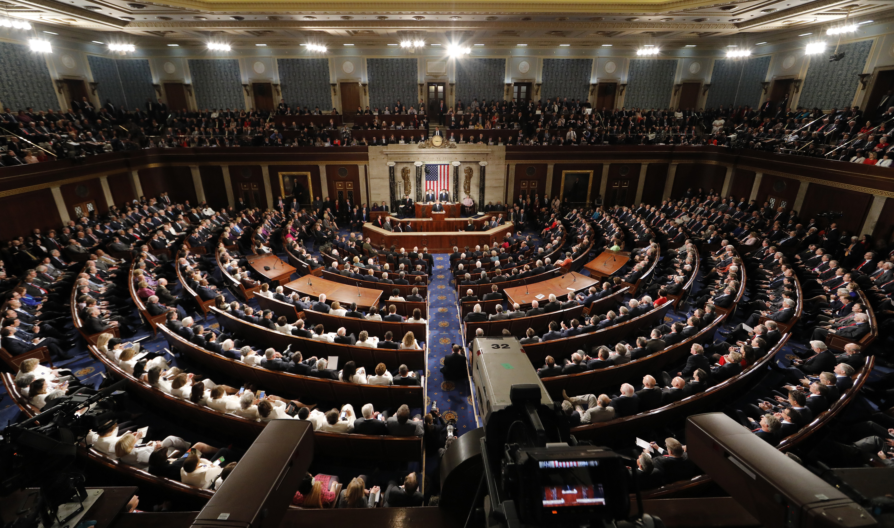
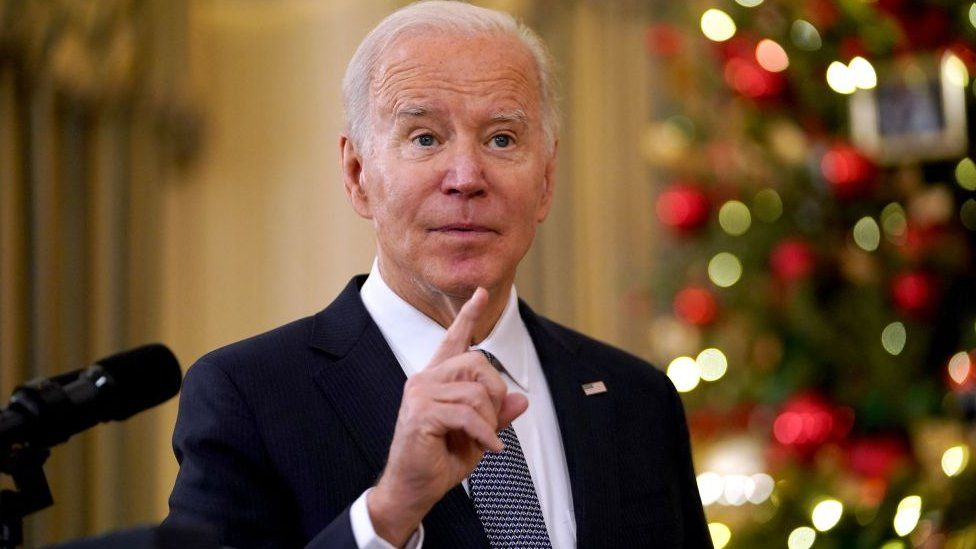

Latest Politics News
Why Congress keeps letting deadlines pile up and pushing them back
When asked Monday about whether his sweeping social spending and climate agenda -- the Build Back Better Act -- can pass the Senate before Christmas as he and congressional leaders want, President Joe Biden responded, "As early as we can get it. We want to get it done no matter how long it takes." And that answer suggests it could be yet another deadline missed.
Biden says US troops in Ukraine are off the table but promises withering sanctions if Russia invades
President Joe Biden on Wednesday ruled out sending US troops to Ukraine to defend the country from a Russian invasion a day after laying out the consequences for such an incursion in a tense phone call with President Vladimir Putin. Speaking to reporters as he departed the White House, Biden said he instead warned Putin he would impose sanctions "like none he's ever seen" should the massive build-up of Russian troops on Ukraine's border escalate into an assault. But he said the US would not dispatch its own forces to Ukraine, a stance that US officials have previously ruled out as well.
